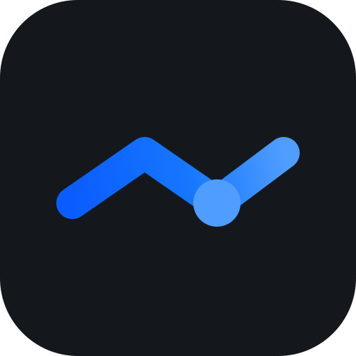
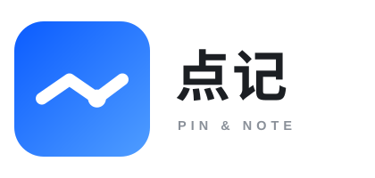
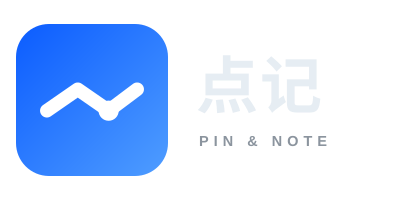

给这个「收藏地点 + 写备注」的小工具起的名字和标记。全部用简笔线条画成：一条折线、一个点，没有阴影、没有渐变高光之外的任何修饰。
第一版为备选方案，最终采用的是第二版「留个点」：brand/v2/logo-spec.html。
两个字，把产品做的两件事各说一遍。
| 项 | 内容 |
|---|---|
| 中文名 | 点记（diǎn jì） |
| 英文 | PIN & NOTE |
| 一句话 | 惦记的地方，都记在这儿。 |
| 不叫 | 地图笔记 / 地点收藏 / My Places —— 太像功能名，不像自己的东西 |
只画两笔：一条折线、一个点。所有决定都是为了「一眼看懂，且不像别人」。
三段折线像一张被折起来的地图。不画水滴形地图针、不画放大镜、不画手机边框——这些每个地图 App 都在用，画了就等于没名字。
你收藏一个地方，通常是在路上顺手记下的，故事没结束。所以点停在中间那个折点上，而不是终点——后面还会有下一个点。
视线最后会落在点上，正好和产品里的顺序一致：先看到「哪儿」，再读「写了什么」。点大一圈，16px 也还认得出。
线帽、线角和方块圆角全部用 round。简笔画的松弛感来自「圆」，一旦出现尖角，就变成流程图图标了。
图标版画布 512 × 512，三个元素：底板、一条折线、一个圆点。
| 元素 | 参数 |
|---|---|
| 底板 | rect 512 × 512，圆角 rx = 112（= 边长 21.875%） |
| 折线 | M104 292 L208 220 L312 292 L408 220fill:none · stroke-width:46（≈ 边长 9%）· linecap/linejoin:round |
| 圆点 | cx 312 / cy 292 / r 34，正好落在第二个折点上 |
| 渐变方向 | x1 104 y1 292 → x2 408 y2 220，从左下往右上走，和折线同向 |
写文案时可以直接引用的三句：
深色版用于深底，浅色版用于浅底，蓝底版用于顶栏这类需要自带对比的位置。三版线条完全一致，只换底色与配色。
底 #14181d 圆点 #4f9dff
渐变 #0b5cff → #1677ff(55%) → #4f9dff
底 #f5f6f7 圆点 #0a4fd8
渐变 #0a4fd8 → #1677ff(55%) → #3d8bff
满版对角渐变 #0b5cff → #4f9dff
线条与圆点 #ffffff
自带蓝底，不依赖页面背景
420 × 200 画布。蓝色方块 152 × 152（rx 33），图标路径按 0.296875 倍缩放，线宽 13.66。


| 元素 | 参数 |
|---|---|
| 中文「点记」 | x196 y108 · 字号 62 · 字重 700 · 字距 2字体 PingFang SC → Hiragino Sans GB → Microsoft YaHei |
| 英文「PIN & NOTE」 | x199 y146 · 字号 14.5 · 字重 600 · 字距 5字体 Helvetica Neue → Arial |
| 文字颜色 | 浅底版：中文 #1c1f23 / 英文 #8a9099深底版：中文 #e6edf3 / 英文 #8b949e |
| 蓝色方块 | x16 y24 · 152 × 152 · rx 33，渐变 #0b5cff → #4f9dff |
不另起一套品牌色，直接沿用页面现有的主题色（web/assets/css/style.css 的 :root）。
最小 16 × 16；圆角随尺寸等比缩放，四周留白 ≥ 边长 1/8。
圆角 = 边长 × 0.219logo-chip.svg（有底色，缩到 16px 也不糊）logo-icon.svg，浅色页面用 logo-icon-light.svg#ffffff）目前只产出设计稿，web/ 尚未引用。要上线时按下面顺序接：
web/index.html、web/admin.html 顶栏加 logo-chip.svg（建议 24–28px）<link rel="icon"> 指向 logo-chip.svg，标签页与桌面图标统一theme-color 用 #1677ff